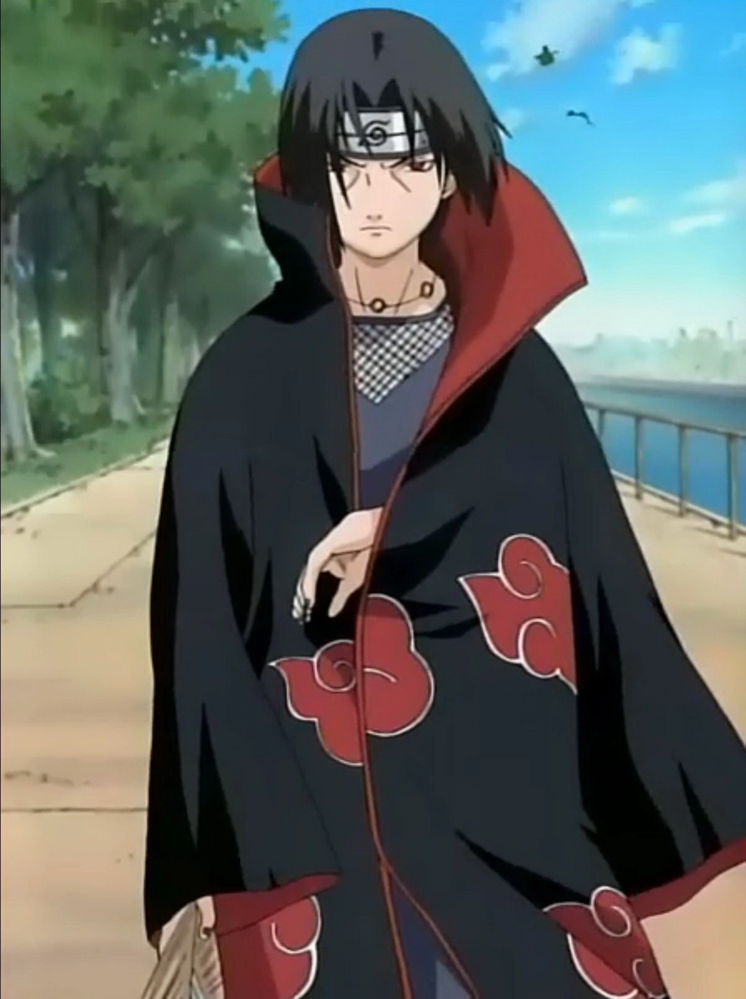

Itachi Uchiha es un exmiembro del clan Uchiha y hermano mayor de Sasuke Uchiha. Es conocido por su habilidad con el Sharingan y por haber aniquilado a su propio clan para evitar una guerra civil. Se une a Akatsuki como un espía, pero su verdadera motivación es proteger a su hermano y evitar que el clan Uchiha sea manipulado.
